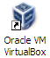

Creación de una máquina virtual equipada con herramientas MF
Instrucciones detalladas para instalar una máquina virtual en una PC usando Virtual Box con los productos MF para pruebas.
Frecuentemente aparece la nomenclatura "host system" y "guest system". "Host" se refiere al sistema operativo "dueño de casa", el que corre en la PC donve se va a instalar la Virtual Box. "Guest" se refiere al sistema operativo "visitante", el de la máquina virtual.
En este ejemplo el host es un sistema Windows XP, y el guest también.
Instalación del sistema "Virtual Box"
Descargar el software de Virtual Box
En la página Download VirtualBox descargar el instalador "VirtualBox 3.2.8 for Windows hosts  x86/amd64" (o la versión que sea en el momento de la descarga).
x86/amd64" (o la versión que sea en el momento de la descarga).
La versión que se usa es la "PUEL" que tiene unas caractarísticas adicionales que son necesarias. La licencia permite uso comercial para individuos.
En la misma página de descarga hay un manual online.
Instalar el software de Virtual Box

Se instala solo una vez, antes de crear la primera Virtual Box. Si ya está instalado este paso se saltea. En una instalación de Virtual Box se puede correr más de una máquina virtual.
Para instalar este programa es necesario ser administrador de la PC.
Es una instalación normal de Windows que no requiere nada especial.
Al comienzo ofrece opciones como "USB Support", "Networking": hay que aceptar todas.
Windows puede mostrar advertencias sobre software que no está validado con el logo de Windows, siempre continuar.
Al finalizar la instalación ofrece iniciar el programa Virtual Box. Chequear la opción, o iniciarlo desde el menú inicio o el ícono en el escritorio si existe.
Si todo funcionó correctamente, el programa Virtual Box muestra la interfase de usuario del programa Virtual Box, sin ninguna VBox definida, y solamente el ícono "New" habilitado.

Picando en el ícono "New" se inicia la secuencia de pasos para definir una nueva VBox.
Definición de la Virtual Box
Inicio

Simplemente picar en el botón "Next".
Nombre y sistema operativo

Se recomienda usar un nombre significativo. Es posible que más adelante haya varias VBoxes y en esas circunstacias tener buenos nombres ayuda mucho.
En este formulario se elige también el sistema operativo y la versión que va a correr la VBox, en este caso Windoes XP. Las opciones de Windows van desde lla versión 3.1 hasta Windows 7. Además de Windows ofrece otros OSs como UNIX, Linux, Mac OS X, BSD, IBM OS/2.
Memoria RAM

La cantidad de memoria RAM que se va a separar de lo que hay disponible en la máquina real para la VBox.
El número tiene que ser razonable, no tan alto como para dejar sin memoria a la máquina host, y pero suficiente como para que la VBox pueda arrancar y correr el software que va a correr sin problemas.
La cantidad de memoria se puede modificar posteriormente desde la UI del programa VBox. La VBox afectada debe estar "apagada" (dice "Powered Off"). Se la selecciona en la lista de VBoxes y picando en el ícono "Settings" se despliega el formulario de configuración, la cantidad de RAM está en la pestaña "System".
Disco duro
En este paso se configura el disco duro de la nueva VBox, en tres pasos. En el primer paso se elige la creación de un nuevo disco duro.

El paso siguiente es el tipo de disco duro. En el sistema VBox los discos duros virtuales se implementan como un archivo único, con dos estrategias. "dynamically expanding" o "fixed size".
Elegimos la primera. "dynamically expanding". Esto produce un archivo que inicialmente ocupa muy poco espacio, y va creciendo a medida que se agregan archivos en la VBox. La otra opción produce un archivo que inicialmente ocupa el tamaño máxino definido, aunque no contenga nada.

El tercer paso es la ubicación y el tamaño del archivo. Propone como nombre del archivo de disco virtual, el mismo nombre de la VBox, que es una buena sugerencia.
También ofrece asignar un tamaño de 10GB, que es adecuado. Es necesario que haya espacio disponible en el disco duro de la PC host para la creación de la imagen del disco virtual.

Resúmen del disco virtual

Antes de crear el disco virtual muestra las opciones elegidas, para confirmación. En esta pantalla se ve la ubicación del archivo, bajo "Documents and Settings" del usuario del host.
Picando en el botón Finish se crea el archivo.
Resúmen de VBox

Esta pantalla, kuy parecida a la anterior, es un resúmen de las opciones elegidas para la creación de la nueva VBox.
Picando en el botón "Finish" se crea la VBox y se termina el wizard.
Confirmación de la creación de la nueva VBox
Esta pantalla muestra la UI del programa Virtual Box, que inicialmente no tenía ninguna VBox definida, y ahora tiene una llamada "MF Training". En el panel de la derecha se muestran las propiedades de MF Training, las que fueron elegidas en el wiard, y algunas agragadas por el programa Virtual Box por defecto.

Instalación de "Guest Additions" para Windows
Se llama así a un conjunto de drivers de VBox que se instalan dentro del sistema operativo guest para mejorar la usabilidad de la VBox.
Para iniciar la instalación hay un ítem en el menú "Devices" de la ventana de la VBox:

Es una instalación normal de Windows, presentada como un wizard:

Al momento de la cración de este instructivo el soporte Direct 3D era experimental, y de todos modos no es necesario para las aplicaciones mainframe, así que no elegimos esa opción. La otral chequeada por defecto, incluye todas las demás extensions.

El driver gráfico no tiene la bendición de Microsoft: ni importa. Picar en "Continue ...".

Siguiendo una tradición de los sistemas Windows, luego de instalar esto hay que reiniciar la VBox:

Una vez que la VBox reinició, ya está.
La utilidad de las Guest Extensions es:
- Mouse pointer integration: reemplazan la "captura" del mouse y la necesidad de tocar la "Host Key" para liberarlo, por una interacción más normal que interpreta los clicks dentro de la ventana de la VBox como dirigidos al guest y los clicks afuera, dirigidos al host.
- Better video support: se puede cambiar la resolución de la "pantalla" de la VBox cambiando el tamaño de la ventana.
- Time synchronization: sincroniza el reloj del guest con el del host.
- Shared folders: esto es lo más importante, permite compartir carpetas entre el host y el guest. Es la manera preferida para intercambiar datos entre las dos máquinas, el paso siguiente es la configuración de una carpeta compartida.
- Seamless windows: libera las ventanas de las aplicaciones de la máquina guest para que aparezcan como ventanas del sistema host, en vez de tenerlas confinadas en la ventana del guest.
- Shared clipboard: para compartir el clipboard entre ambos sistemas. Tiene opciones (Disabled, Host to Guest, Guest to Host, Bidirectional) y por default selecciona Bidirectional. Se puede cambiar en desde la UI de Virtual Box en Settings → General → Advanced.
- Automated logons (credentials passing): organiza logons sincronizados, de modo que el host le pasa las credenciales al guest.
Definición de una carpeta compartida
El primer paso es crear una carpeta en el filesystem del host, por ejemplo la carpeta sugestivamente llamada "vBoxShared" que contiene dos subdirectorios:

La carpeta en cuestión debe ser una carpeta compartida de Windows:

Una vez que la carpeta está disponible en el host se la puede referenciar en el guest. Se usa el menú Devices → Shared Folders ...

... para abrir el diálogo "Shared Folders" que inicialmente no tiene ninguna carpeta compartida.
Se pica en el botón "Add Shared Folder"  para abrir el diálofo "Add Share".
para abrir el diálofo "Add Share".

En el diálogo "Add Share" se despliega "Folder Path" y se elige "Other", esa acción despliega el diálogo de selección de carpeta normal de Windows.
 alt="Add Share"
alt="Add Share"
Luego de navegar hasta la carpeta para compartir y seleccionarla, el path muestra en "Folder Path" y en "Folder Name" el nombre tomado del path, que dejamos así por que es un nombre adecuado: "vBoxShared". Este último es el nombre que la carpeta va a tener en el guest.
Podemos en ese mismo dialogo hacer que la carpeta sea read only en el guest, y que sea permanente. Elegimos la segunda opción.
Picando OK la carpeta compartida está disponible en el sistema guest.

Para verla en una ubicación más conveniente se la puede conectar a una drive letter, siguiendo el procedimiento normal de Windows:

Mapeando el share al drive X: se despliega junto con el disco C: de la VBox:

Para tener consistencia,también se puede mapear la carpeta original a la X: en el host. Se hace seleccionando la carpeta en el explorador de Windows y luego menú Tools → Map Network Drive... .
El contenido de la carpeta compartida no se actualiza automáticamente en la máquina guest. Luego de modificar el contenido de la carpeta en en host, los archivos nuevos o cambiados no se ven en el guest. Para verlos hay que hacer un refresh de la vista en el guest, por ejemplo tocando F5.
Preparación del software MF a instalar (CD o DVD)
Muchas PCs no tienen lectora de DVDs, y algunas ni siquiera tienen lectora de CDs. Pero en cambio la VBox tiene la posibilidad de leer imágenes ISO de discos.
Entonces el promer paso es obtener una imagen ISO de un disco con el software MF.
La imagen ISO se puede hacer con un programa de grabaci[on de CDs. Usando Nero, por ejemplo, se elige el menu Recorder > Choose Recorder ... y en el diálogo "Choose Recorder" se elige "Image Recorder". La grabación produce un archivo con extensión .iso que se puede montar en la lectira virtual de la VBox.
Se pica en el ícono  del drive virtual de CD/DVD con el botón derecho y se elige "More CD/DVD images ...".
del drive virtual de CD/DVD con el botón derecho y se elige "More CD/DVD images ...".

Se abre el diálogo "Virtual Media Manager". Picando en el botón "Add" aparece el browser de archivos normal de Windows. Hay que navegar hasta el archico con la imagen del software a instalar y seleccionarla. Hecho esto la lectora de CDs de la VBox, posiboemente D:, mostrará el contenido del disco que se usó para grabar la imagen ISO.
En el ejemplo es el archivo "mf_nx60_cd.iso" que aparece seleccionado.
Si el sistema host tuviera una lectora (el del ejemplo tiene tres: D:, E: y F:) entonces se pone el disco en la lectora y se la selecciona en el menú. El disco montado es el que tiene la tilde a la izquierda.
Como está el ejemplo, los programas a instalar se ven en el disco D: del sistema guest.